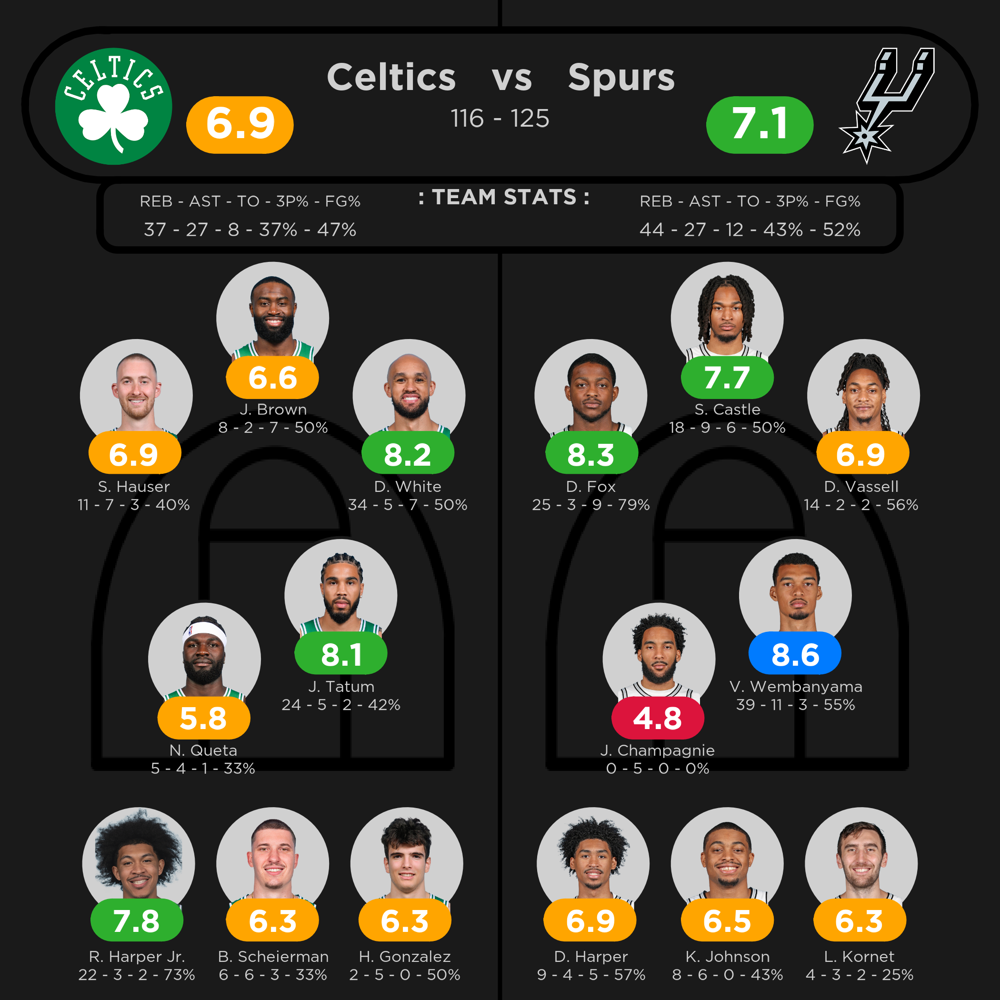
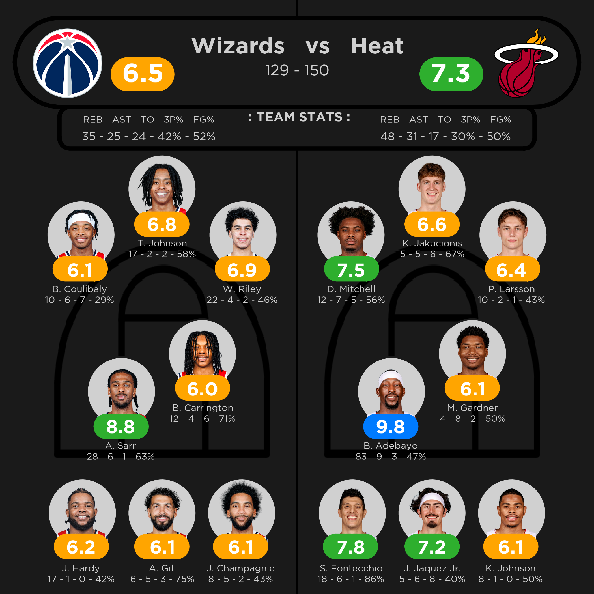

Overview
As a huge NBA fan, I open the NBA app every night to check the game scores and player performances from the night's slate of games. I never liked how different sports app displayed the player's stats and it was very difficult to understand which players played well at a short glance. The only sports app I liked was called Fotmob, an app on for soccer that gave a rating out of 10 for each player purely based on their stats in the game. I felt like this method could easily be applied to the NBA.
I got to work on an NBA player rating system that took box scores and play by play data from every game and rated a player's performance out of 10 based on hundreds of stats and metrics throughout the game. The rating goes beyond the basic box score stats. Clutch time performance, defensive statistics, and impact per minute on the court is all considered in the final rating. The processs of developing the scoring system, tweaking it until the ratings looked consistent with what I watched, and getting the final graphic perfect was a very fun process that allowed me to grow my analytical skills doing something I am passionate about.
Gallery
Here is an example of the rating graphic of a game. This is the Celtics vs. Spurs game on 3/10/2026:

Here is another example. This is Bam's 83 point game on 3-10-2026:
